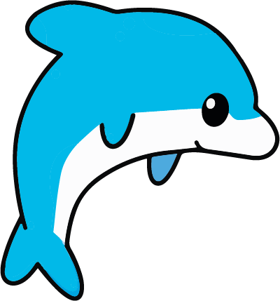
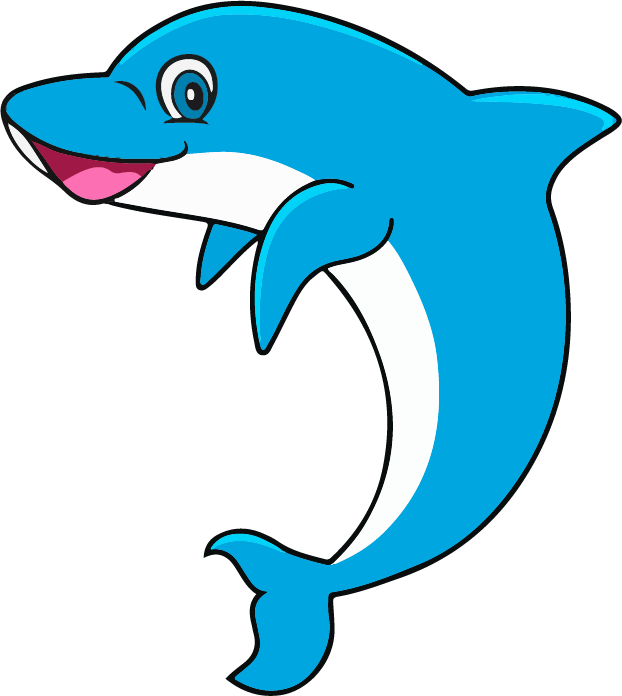
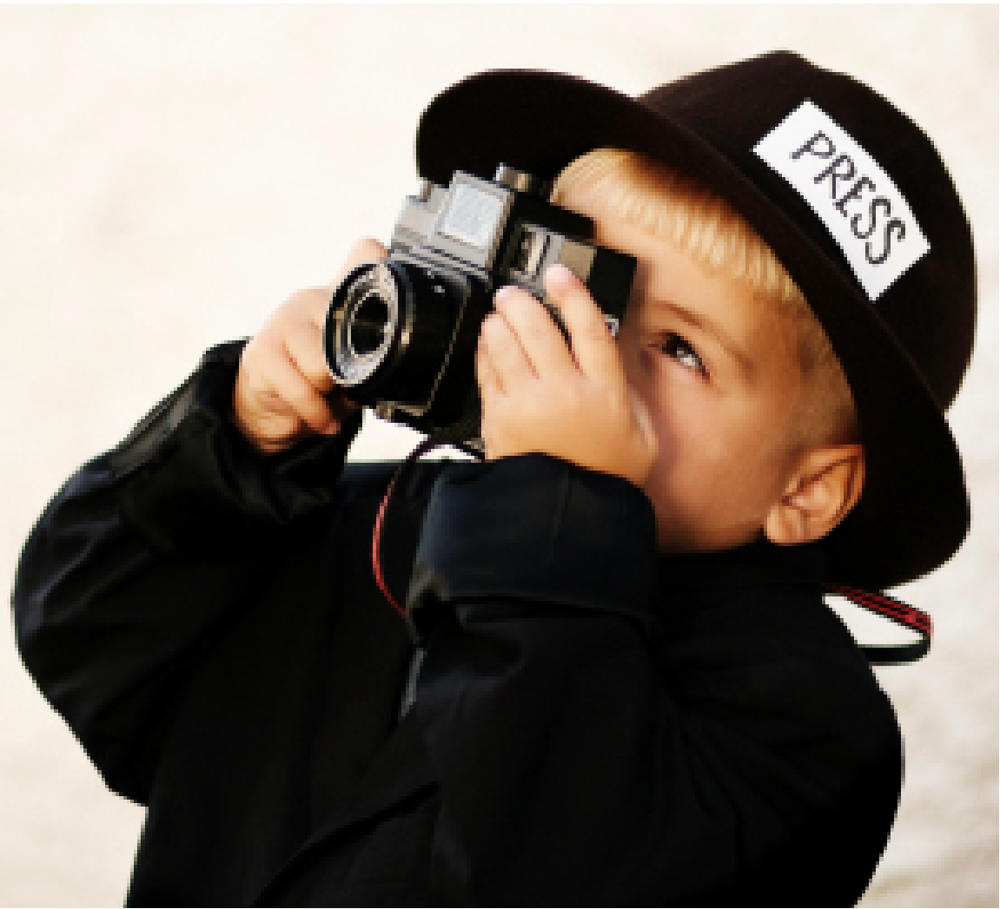
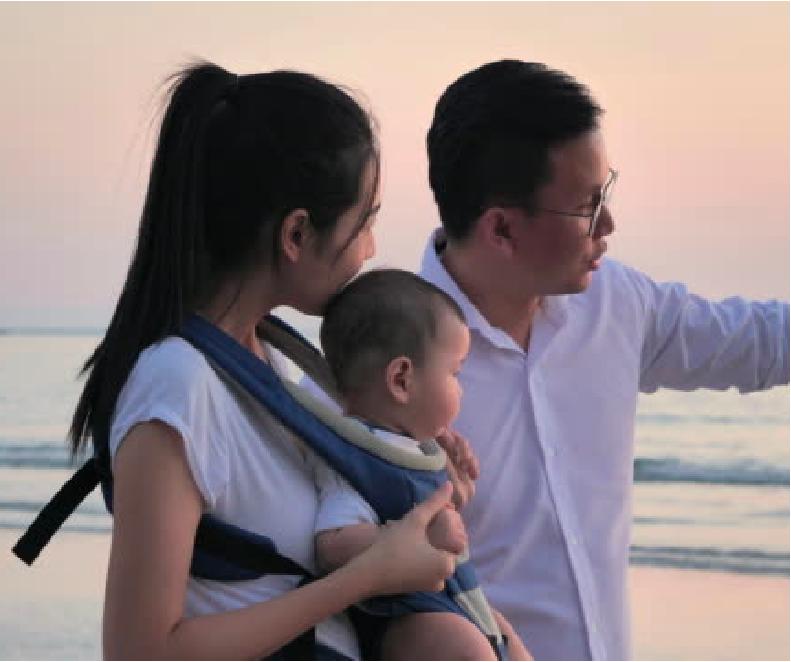
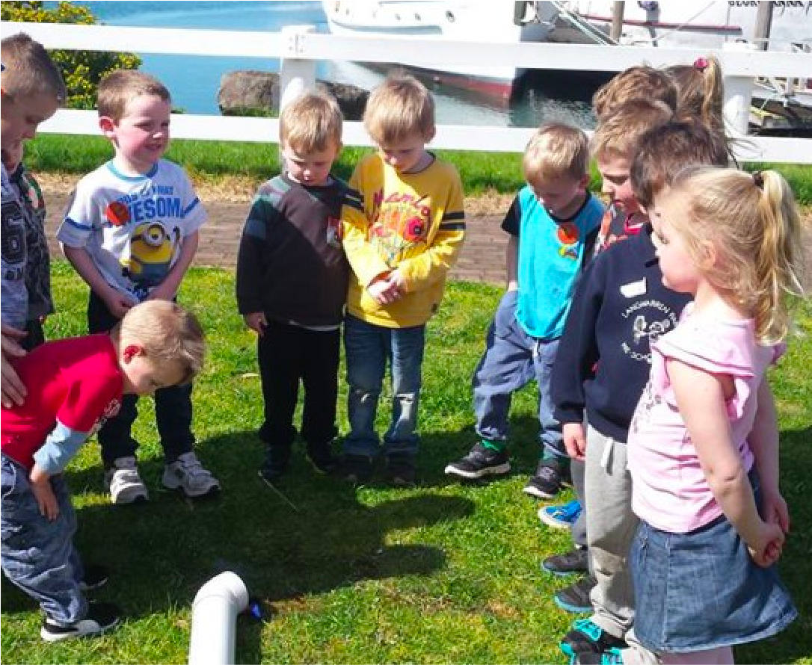
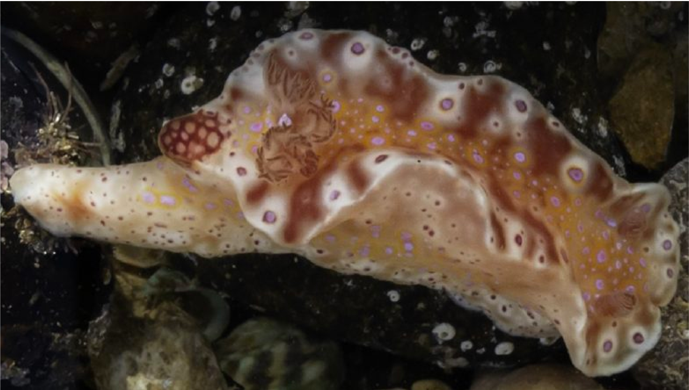
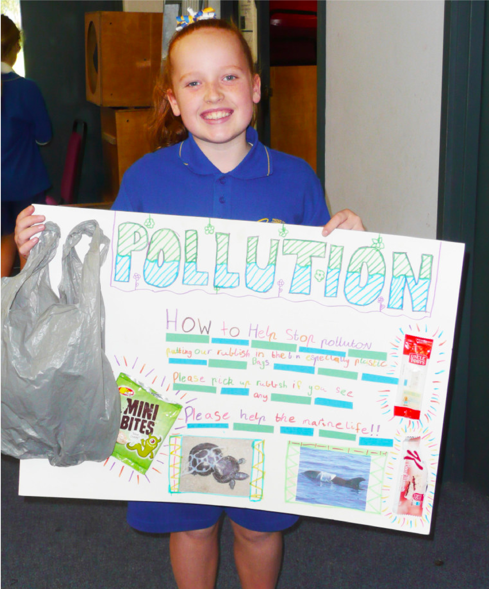
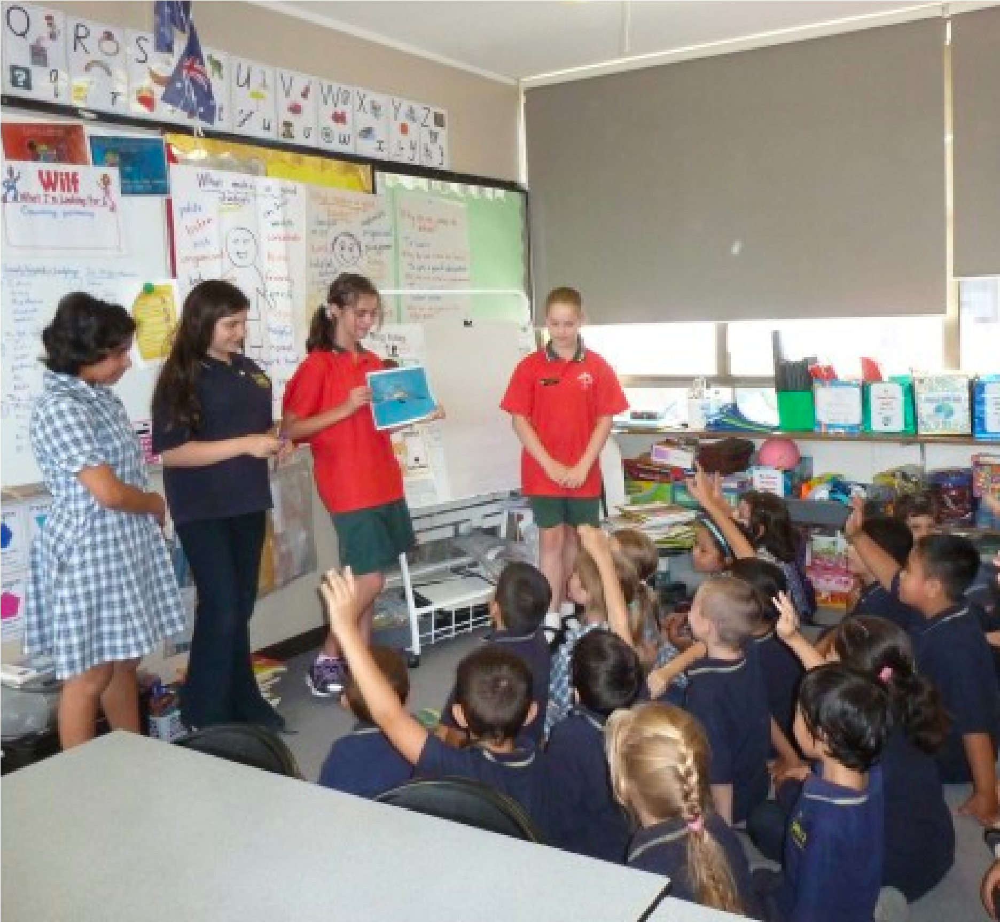
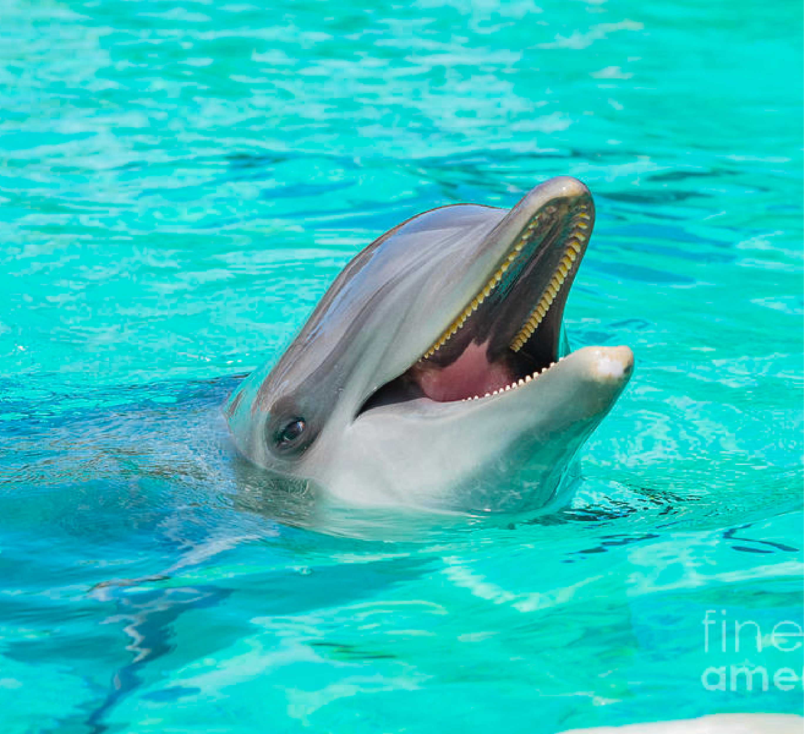
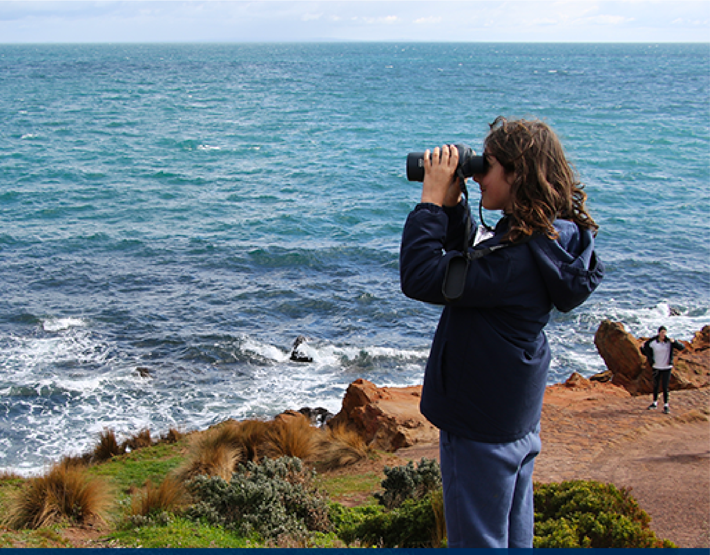

Who we are?
The Dolphin Research Institute is based at Hastings, on the shores of Western Port in Victoria, Australia (map). DRI's research is focused primarily in the south-eastern region of Victoria, especially Port Phillip, Western Port and the Gippsland Lakes.
DRI began in the late 1980's by people who were concerned about local dolphins and their marine environment. The Institute has grown in to the well-managed, sustainable, not-for-profit conservation organisation that is the 'go-to' for just about all-things dolphin related in Victoria. The Dolphin Research Institute has been caring for our bays since 1991 - we are proud that we are now also pioneering the federally-funded National Dolphin Health Project.
DRI is a registered charity and is self-funded from the community, foundations, the corporate sector and government grants. Our original concerns and passions about dolphins remain. We now spread our work further through community involvement with citizen science projects and education programs, including our award-winning 'i sea, i care' Ambassador program in primary schools. We know that all 'drains lead to the sea' - catchment management, pollution control and public education are as important as picking up litter on the beach for the health of our waterways and ultimately, dolphins.
The Institute has received many awards including the prestigious Banksia Environment Foundation national award in the "Marine & Coastal Water" category in 1997, the "Victorian Coastal Awards of Excellence" Species Protection category in 2002 and the "Community Partnerships" category in 2013.
-

primary and secondary school children
Learn More
-

parent
-

Be a small reporter
Meaningful outside activity with kids
Research Data -

Explore the world of marine and make friends
Learn Victorian unique creatures
Education -

Be an ambassaor and see yourself online
An innovative leadership program for your children
I Sea,I care -

Protect cute marine creatures
Proudly protect our bay
ISIC
Community